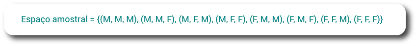

Durante esta etapa, estudamos a pesquisa censitária e os resultados dessa pesquisa realizada na cidade de Calculópolis, que tinha como objetivo compreender melhor o perfil da população, suas necessidades e entender os programas sociais mais necessários à cidade.
Uma família muito conhecida por nós é a família Silva. Você se lembra dela? A família Silva sofreu algumas modificações na sua estrutura e na sua configuração familiar, que atualmente ficou desenhada da seguinte forma: marido Silva, esposa Silva, filho Silva, vó Silva, tia Silva e primo Silva.
A família Silva conta com seis integrantes, e três deles têm renda que compõe o orçamento familiar, e sabemos que as despesas também aumentaram. Observando as rendas atuais da família Silva, temos os seguintes valores:
R$ 2.151,00, R$ 960,00 e R$ 1.212,00, compondo uma renda per capita familiar de R$ 720,50 por integrante da família.
Para ter acesso aos programas sociais disponíveis, a política da assistência social no Brasil utiliza como um dos critérios a renda per capita familiar, que é a média salarial por morador da residência, para verificar quem são os brasileiros que têm direito de acesso aos programas sociais.
Nas cidades, existem ainda programas governamentais e não governamentais, que são voltados para atender famílias em situação de vulnerabilidade social. As organizações governamentais são entidades mantidas pelos governos federal, estadual ou municipal. Elas recebem, diretamente, verbas públicas destinadas ao cumprimento de seu efetivo trabalho em prol das áreas em que elas atuam.
As organizações não governamentais (ONGs) são todas as organizações, sem fins lucrativos, criadas por pessoas que trabalham voluntariamente em defesa de uma causa, como proteção do meio ambiente, defesa dos direitos humanos, erradicação do trabalho infantil etc.
Veja dois exemplos de ONGs, clicando nos botões a seguir.
Você conhece algum projeto assim aí na sua cidade? Você contribui para alguma ONG? Reflita sobre isso!
Entende-se que uma família pode ser considerada em vulnerabilidade social se encontrar dificuldades de suprir demandas de acesso a serviços aos seus membros. Alguns exemplos de vulnerabilidade podem ser o difícil acesso a creche, saúde, escola, lazer e programas que atendam a jovens em um turno oposto ao da aula regular.
Também existem ações voltadas a esportes, que estão relacionadas com saúde, combate ao sedentarismo e lazer. Além de incentivar hábitos mais saudáveis na população e, consequentemente, aliviar o sistema público de saúde, as ações contribuem para a percepção de bom uso dos impostos.
Assista ao vídeo a seguir para mais informações sobre o assunto.
Segundo a Agência IBGE de notícias (Instituto Brasileiro de Geografia e Estatística), em 2015, no Brasil, 38,8 milhões de pessoas de 15 anos ou mais praticavam algum esporte no período de referência e 123 milhões de pessoas não praticavam, sendo que 91,3 milhões de pessoas nunca praticaram esportes na vida. Na pesquisa, o futebol foi indicado como a modalidade esportiva mais praticada no Brasil, com 15,3 milhões de pessoas ou 39,3% dos 38,8 milhões de praticantes de esportes. Em segundo lugar, veio a caminhada (9,5 milhões de pessoas ou 24,6%), seguida pelo esporte fitness (3,5 milhões de pessoas ou 9%) (FALTA..., 2017).
Após os resultados da pesquisa censitária realizada, a administração municipal de Calculópolis se mobilizou e implantou alguns projetos sociais para atender aos bairros Vila Soma e Morro da Subtração. O primeiro projeto implementado foi no Morro da Subtração, “Brilhando no Futebol”, um projeto destinado aos jovens (meninos e meninas) entre 7 e 16 anos, que visa, por meio do futebol, afastar esses jovens de práticas nocivas à vida, como a situação de rua, o envolvimento com o tráfico de drogas, a prostituição ou ainda o abuso do trabalho infantil.

O projeto Brilhando no Futebol busca proporcionar acesso a atividades esportivas educacionais a crianças e adolescentes, visando ao aperfeiçoamento técnico e ao aprimoramento de habilidades coletivas. Por meio da prática esportiva, é possível promover socialização, rotina, cumprimento de regras, disciplina, trabalho em equipe, liderança, respeito, persistência, solidariedade e cooperação, além de proporcionar situações que motivem aprender com os erros e alcançar metas.
Outro projeto, implementado no bairro Vila Soma, foi a Maturidade se Mexendo, um projeto destinado aos idosos a partir dos 60 anos, visando à prática de esportes, à participação em eventos culturais e à realização de passeios. Ou seja, esse projeto objetiva proporcionar um envelhecer mais ativo e saudável.
Como o filho e o primo Silva são menores de idade, com respectivamente 8 e 12 anos, e conforme a renda per capita, o bairro onde moram e a falta de um cuidador responsável no contraturno escolar, verificou-se a necessidade de um local para eles ficarem no turno da tarde. Por isso, os meninos participarão do projeto “Brilhando no Futebol”.
O tempo passa muito rápido, não é mesmo? O primo e o filho Silva já estavam há seis meses praticando e treinando no projeto “Brilhando no Futebol” quando os responsáveis pelo projeto decidiram realizar um campeonato com a intenção de dar mais visibilidade ao projeto e aos meninos e às meninas jogadores.
A primeira organização dos responsáveis pelo projeto foi garantir que as equipes fossem mistas, com meninos e meninas. Após iniciou-se a divisão do número de meninos e meninas, de acordo com a faixa etária, para saberem se tinham equipes suficientes para o campeonato. Veja as categorias a seguir.
O campeonato contará com 12 equipes, 2 por categoria. Em cada equipe, serão 9 jovens participantes: 6 jogadores, 1 goleiro e 2 reservas. Além disso, foi dividido em dois níveis: nível 1, composto pelas equipes fraldinha, dente de leite e pré-mirim; e nível 2, composto pelas equipes mirim, infantil e infantojuvenil. Cada nível terá um vencedor para o campeonato.
O primeiro jogo de cada equipe será contra o seu adversário de categoria. Cada jogo terá um total de 30 minutos. Para iniciar a partida, é arremessada uma moeda e a equipe vitoriosa escolhe o lado que iniciará jogando. No final dos 15 primeiros minutos, as equipes trocam de lado. Caso o jogo se mantenha empatado, o vencedor será definido em disputa de pênaltis.

O vitorioso de cada jogo irá para a próxima fase, a fase de grupos. Na segunda fase, as equipes jogarão umas contra as outras, em jogos únicos. O vencedor dessa etapa será a equipe com maior pontuação.
Em caso de vitória, a equipe vencedora conquista três pontos, enquanto a perdedora não soma nenhum ponto. Se uma partida terminar empatada, as duas equipes em campo somam um ponto.
Caso, nessa fase, as equipes terminem com a mesma pontuação, existirão dois critérios de desempate: saldo de gols, que é a diferença entre gols pró e gols contra, e número total de gols marcados (se o saldo de gols for o mesmo entre as equipes).
Após a apresentação das regras para o campeonato, é necessário organizar as equipes e as partidas. Como podemos organizar esse campeonato para que as equipes de um mesmo nível se enfrentem, umas contra as outras, em jogos únicos? Quais as formas que podemos utilizar para organizar os jogos do campeonato?
Podemos utilizar um esquema chamado árvore de possibilidades, que é uma maneira de resolver situações-problema por meio de desenhos de diagramas mostrando as possíveis maneiras de combinar determinadas situações.
Clique ou toque para visualizar o conteúdo.
A seguir, veja um esquema que apresenta a distribuição das equipes que se enfrentarão e a projeção final dos enfrentamentos do nível 1. Observe que estamos analisando a primeira etapa do campeonato, ou seja, um primeiro experimento.
Experimento é toda experiência, ensaio ou pesquisa com alguns elementos, os quais podemos observar diferentes resultados entre todos os resultados possíveis.
A partir da árvore de possibilidades apresentada, podemos notar que as equipes da mesma categoria se enfrentarão e sairá um ganhador. Nessa situação, chamamos de espaço amostral o conjunto formado por todas as combinações entre as equipes com chances de ir para a próxima etapa. Essas informações são mais facilmente observadas na árvore de possibilidades a seguir.
Note que são oito possibilidades diferentes de times que disputarão a próxima etapa do campeonato do nível 1. Esse número indica a quantidade de elementos do espaço amostral. A seguir, apresentamos a organização da árvore de possibilidades na forma de conjunto.
Espaço amostral é o conjunto formado por todos os possíveis resultados de um experimento.
Dessa primeira fase do campeonato, devem prosseguir no campeonato apenas 3 equipes que precisarão disputar o título do campeonato do nível 1. Esses 3 finalistas (vencedor Fraldinha, vencedor Dente de leite e vencedor Pré-mirim) são chamados de evento.
Evento é qualquer subconjunto de um espaço amostral. Ele pode conter nenhum elemento (conjunto vazio) ou todos os elementos de um espaço amostral.
Um conjunto A é subconjunto de outro conjunto B quando qualquer elemento de A também pertence a B.
Mas e agora, como podemos fazer para que os três ganhadores finais se enfrentem para termos um campeão? Lembre-se de que, na segunda fase, as equipes jogarão umas contra as outras, em jogos únicos. Podemos utilizar a árvore de possibilidades. Você se lembra que já a utilizamos anteriormente? É só fazer a combinação das três equipes finalistas.
Como os jogos são únicos, a ordem da equipe não importa, por isso, devemos excluir o jogo que se repetir, assim teremos:
Teremos apenas três jogos, ou seja, três possibilidades diferentes de cada equipe dar o seu melhor. O campeão no nível 1 será a equipe com melhor pontuação.
A seguir, temos um esquema que apresenta a distribuição das equipes que se enfrentarão e a projeção final dos enfrentamentos do nível 2. Observe que agora estamos analisando a primeira etapa do campeonato, ou seja, um primeiro experimento.
A partir da árvore de possibilidades apresentada, podemos notar que as equipes da mesma categoria se enfrentarão e sairá um ganhador. Nessa situação, chamamos de espaço amostral o conjunto formado por todas as combinações entre as equipes com chances de ir para a próxima etapa. Essas informações são mais facilmente observadas na árvore de possibilidades a seguir.
Note que são oito possibilidades diferentes de times que disputarão a próxima etapa do campeonato do nível 2. Esse número indica a quantidade de elementos do espaço amostral. A seguir apresentamos a organização da árvore na forma de conjunto:
{(Mirim 1, Infantil 1, Infantojuvenil 1), (Mirim 1, Infantil 1, Infantojuvenil 2), (Mirim 1, Infantil 2, Infantojuvenil 1), (Mirim 1, Infantil 2, Infantojuvenil 2), (Mirim 1, Infantil 1, Infantojuvenil 1), (Mirim 1, Infantil 1, Infantojuvenil 2), (Mirim 1, Infantil 2, Infantojuvenil 1), (Mirim 1, Infantil 2, Infantojuvenil 2)}
Dessa primeira fase do campeonato devem prosseguir no campeonato apenas 3 equipes que precisarão disputar o título do campeonato do nível 2. Esses 3 finalistas (vencedor Fraldinha, vencedor Dente de leite, vencedor Pré-mirim) são chamados de evento.
A partir do esquema, podemos notar que as equipes da mesma categoria se enfrentarão e sairá um ganhador. Utilizando a árvore de possibilidades, podemos verificar quais são as possibilidades dos próximos jogos.
Lembre-se: os jogos acontecerão no mesmo local, em jogos únicos, e a ordem da equipe não importa, por isso devemos excluir o jogo que se repetir, assim teremos:
Teremos apenas três jogos, ou seja, três possibilidades diferentes de cada equipe dar o seu melhor. O campeão no nível 2 será a equipe com melhor pontuação.
Sobre espaço amostral, acompanhe a seguir algumas situações para compreender melhor os conceitos apresentados.
1. O time de futebol da escola Pitagórica disputou um campeonato escolar. O professor Fernando, de educação física, convocou quatro alunos que jogam na posição de atacante, são eles: Ronaldo, Zico, Dodô e Hugo. Qual é o espaço amostral das duplas de ataque que podemos formar com esses alunos?
2. O casal Anderson e Jacobina pretende ter três filhos. A seguir, temos o espaço amostral que representa as possibilidades de filhos em relação ao sexo masculino (M) ou feminino (F).
Evento 1
Arraste a opção que corresponde ao evento A, em que podemos determinar a ocorrência de três filhos do sexo masculino.
Evento 2
Arraste as opções para o evento B, em que podemos determinar a ocorrência de dois filhos do sexo feminino e um do masculino.


3. As equipes do projeto Brilhando no Futebol foram convidadas para participar de um campeonato fora da cidade, porém não possuem verba suficiente para organizar a viagem para todos os jogadores. Os responsáveis tiveram a ideia de realizar a rifa de um computador. Assim, fizeram mil bilhetes, numerados de 1 a 1000, dos quais apenas um será premiado por sorteio. Lorenzo comprou os bilhetes de números 324, 325, 326, 327, 328, 329 e 330. Com base nessas informações, clique na opção correta.
Qual é o número de elementos do espaço amostral desse experimento?
Qual é o número de elementos do espaço amostral desse experimento?
Como já vimos nas regras para o campeonato Brilhando no Futebol e também em outros jogos, uma das regras do futebol se refere ao início do jogo, que é o lançamento de uma moeda para determinar o lado do campo de cada equipe e qual efetuará o chute inicial para dar início à partida.
A equipe vencedora terá o direito de escolher a direção para a qual atacará no primeiro tempo da partida, ficando a outra para efetuar o chute que dará início à partida. No segundo tempo, inverte-se a posição de ataque e a equipe vencedora executa o chute para dar início ao segundo tempo.
Vamos refletir um pouco?
Quando lançamos uma moeda para cima, quais são as possibilidades de resposta?
Assista ao vídeo a seguir e descubra!
Com a árvore de possibilidades, podemos identificar todas as combinações possíveis. Porém, essa não é a única maneira de descobrir todas as possibilidades de algo ocorrer. Também podemos utilizar o princípio multiplicativo, que é uma ferramenta utilizada para se calcular o número de possibilidades para um evento. Essas possibilidades são determinadas pela multiplicação das opções dadas.
No primeiro lançamento, temos duas possibilidades: sair cara ou coroa. O mesmo acontece no segundo lançamento, ou seja, 2 . 2 = 4 (dois vezes dois é igual a quatro).
Princípio multiplicativo ou princípio fundamental da contagem é uma ferramenta utilizada para se calcular o número de possibilidades para um evento. Essas possibilidades são determinadas pela multiplicação das opções dadas.
Vamos aprofundar os estudos? Assista aos vídeos a seguir e acompanhe mais exemplos de problemas envolvendo o princípio multiplicativo.
Dessa maneira, não se pode controlar os fatores que conduzem a um resultado favorável a uma ou a outra equipe. Assim, dizemos que os resultados dependem do acaso. Por isso, é um exemplo de experimento aleatório.
Um experimento é dito aleatório quando o seu resultado depende de fatores que não podem ser controlados nem previstos, de modo que, se o experimento for repetido em condições idênticas, pode-se obter um resultado igual ou diferente do anterior.
Considerando o conteúdo que você viu até aqui, responda às questões a seguir.
Considere a árvore de possibilidades:
1. Na escola de Calculópolis, os professores do Ensino Médio desejam organizar uma comissão para ir à prefeitura e conversar com o prefeito sobre o ginásio escolar, que foi destruído em dezembro pelo temporal que atingiu a cidade. A escola tem 1 professor na área de matemática, 5 na área de linguagens, 4 na área de ciências humanas e 3 na área de ciências da natureza. Há quantas possibilidades diferentes de se formar uma comissão que contenha um professor de cada área?
Considere a árvore de possibilidades:
2. Para ir a uma festa, Ana dispõe de duas camisas e duas calças. Analisando a árvore de possibilidades, de quantas maneiras diferentes Ana pode se vestir?
Agora que você já praticou mais um pouco, precisamos da sua ajuda para elaborar um cartaz com todas as possibilidades de escolha do uniforme para que os meninos possam escolher. Acesse o vestiário interativo e nos ajude a descobrir a quantidade de possibilidades.
A aleatoriedade também está presente em diversos fenômenos do dia a dia. A previsão do tempo, por exemplo, é feita com base em uma grande quantidade de dados meteorológicos, que são processados por computadores. Porém, as condições climáticas são influenciadas por outros diversos fatores e, dada a existência do acaso, nenhuma previsão é totalmente segura.
A previsão do tempo é muito importante em diversas situações como, por exemplo, na realização de um evento. O campeonato Brilhando no Futebol será realizado em uma área externa e descoberta e conta com uma previsão de sol.
A previsão do tempo é feita diante da análise de muitos dados ao mesmo tempo. Segundo o Instituto Nacional de Meteorologia, são considerados dados atmosféricos: precipitação, ventos, umidade relativa do ar, pressão atmosférica, entre outros. Esses dados são observados por meio de estações meteorológicas (terrestres e marítimas), imagens de satélite, radares meteorológicos e diversos mapas e gráficos gerados por supercomputadores.
Podemos usar a previsão do tempo para agendar no dia com menor probabilidade de chuva. Veja a previsão do tempo na cidade de Calculópolis.
Note que teremos períodos de chuva e de sol. Para que o evento ocorra sem nenhum contratempo, o ideal seria que, durante os jogos, não chovesse. Assim, os organizadores acompanham a previsão do tempo.
E você sabe interpretar o percentual apresentado nas previsões do tempo?
Algumas pessoas têm dificuldades de compreender o que essa taxa percentual significa, gerando, até mesmo, fake news, como podemos observar na reportagem da Zero Hora.
Clique ou toque no botão para ler a reportagem na íntegra.
Você sabe o que significa a probabilidade de chover?
A probabilidade de chuva são as chances de chover em determinado local. Na previsão do tempo apresentada anteriormente, a chance de chover no dia é de 90%, ou seja, é grande a chance de chuva. A probabilidade de chover é maior do que a de não chover. A previsão indica cerca de 15 mm (milímetros) para a cidade, mas isso não quer dizer que choverá 15 mm em todos os bairros da cidade. Também não significa que há 90% de chance de chover no território em que você está, mas sim na cidade como um todo.
Você sabe como é medida a chuva?
Estamos acostumados a ouvir quanto choveu em uma determinada região por milímetros. Mas você sabe o que isso significa? A chuva é medida por milímetros por metro quadrado. Um milímetro de chuva representa um litro de água por metro quadrado. Os pluviômetros são os instrumentos que auxiliam na medição da quantidade de chuva.
Com todas essas informações já é possível procurar a previsão do tempo para os outros dias e marcar a data para o campeonato Brilhando no Futebol. Porém, lembre-se de que a previsão não é totalmente segura, ela apenas fornece uma ideia do que pode acontecer ao longo dos dias.
Os meninos do Brilhando no Futebol ficaram ansiosos e alegres com o campeonato. Logo que foi apresentada a organização dos jogos, já começou um burburinho com as expectativas a respeito de quem ganhará o campeonato. Não temos a certeza de quem ganhará, mas a matemática pode nos ajudar a descobrir quais são as chances que cada equipe tem de ganhar ou a probabilidade dessa vitória.
Vamos refletir sobre isso? Quando desejamos verificar as chances de uma equipe sair campeã, estamos definindo o conceito de evento.
A probabilidade indica a chance de um evento (alguma coisa) acontecer. Lembre-se de que um evento é qualquer subconjunto de um espaço amostral.
A chance de um evento ocorrer é sempre um número entre 0 e 1 ou entre 0% e 100%. Com os valores do evento e do espaço amostral encontramos uma fração irredutível que representará essa porcentagem, e essas frações podem ser transformadas em porcentagem, tendo a probabilidade entre 0% e 100%.
Para calcular a probabilidade, dividimos o número de elementos do evento correspondente ao experimento pelo número de elementos do seu espaço amostral.
Portanto, qual é a probabilidade de a equipe Fraldinha 1 ganhar da equipe Fraldinha 2?
Primeiramente, consideremos que ambas as equipes têm chances iguais. O nosso evento, nesse caso, é a equipe Fraldinha 1 ganhar, e o espaço amostral é formado pelas duas equipes.
A probabilidade é dada pela razão entre o número de elementos do meu conjunto evento, ou seja, o número de casos favoráveis, sobre o número de elementos no meu espaço amostral, ou seja, o número de casos possíveis.
O número de casos favoráveis é 1, pois queremos que a Fraldinha 1 ganhe (uma equipe), e o total de casos possíveis são 2, pois temos duas equipes (Fraldinha 1 e Fraldinha 2). Assim, podemos organizar na forma de razão:
A probabilidade pode ser representada como fração, como porcentagem ou como número decimal. Para ficar mais evidente, apresentamos a probabilidade por meio da porcentagem. Para isso, devemos multiplicar o número decimal, resultado da divisão, por 100%.
Dessa forma, a probabilidade de a equipe Fraldinha 1 ganhar da Fraldinha 2 é de 50%. Entendemos com esse resultado que nenhuma equipe tem vantagem, pois as duas têm as mesmas chances de ganhar, ou seja, 50% de chance. Se observarmos os demais jogos desta fase, a probabilidade é a mesma, pois são duas equipes e um ganhador que passará para a próxima fase.
Vamos analisar agora a próxima fase, na qual teremos três equipes e três jogos.
Qual é a probabilidade de a vencedora da categoria Fraldinha ser a ganhadora dessa fase?
O número de casos favoráveis é 1, pois queremos que a vencedora da Fraldinha ganhe (uma equipe), e o total de casos possíveis é 3, pois temos três equipes (vencedora da Fraldinha, Dente de leite e Pré-mirim).
Assim, podemos organizar na forma de razão:
Para simplificar, apresentamos a probabilidade por meio da porcentagem. Para isso, devemos multiplicar o número decimal, resultado da divisão, por 100%.
Dessa forma, a probabilidade de a vencedora da Fraldinha ganhar das outras duas equipes é de aproximadamente 33%. Podemos interpretar a partir desse resultado que nenhuma equipe tem vantagem, pois as três têm as mesmas chances de ganhar: aproximadamente 33%. Se observarmos os demais jogos desta fase, a probabilidade é a mesma, pois são três equipes e um ganhador que passará para a próxima fase. Dessa forma, a probabilidade de a vencedora da Fraldinha ganhar das outras duas equipes é de aproximadamente 33%. Podemos interpretar a partir desse resultado que nenhuma equipe tem vantagem, pois as três têm as mesmas chances de ganhar: aproximadamente 33%. Se observarmos os demais jogos desta fase, a probabilidade é a mesma, pois são três equipes e um ganhador que passará para a próxima fase.
Que tal aprofundar os estudos? Assista ao vídeo a seguir e acompanhe mais exemplos de problemas que envolvem o cálculo de probabilidades.
Que tal aprofundar mais seus estudos refletindo sobre as questões a seguir? Essa é uma ótima forma de você praticar tudo que aprendeu até aqui! Para obter a resposta, basta clicar ou tocar para visualizá-la, mas, antes, tente resolver a questão.
Suponha que um jogador queira que o dado mostre o número 8 em sua face superior.
Suponha que um jogador queira que o dado mostre um número par na face superior.
Resposta: o evento é: mostrar um número par, logo, o conjunto formado pelo evento é {2, 4, 6, 8} e o número de elementos desse conjunto é 4.
Resposta: como o conjunto formado pelo espaço amostral contém 8 elementos e o conjunto formado pelo evento contém 4 elementos, temos o seguinte:
Resposta: o evento é: cair um número da tabuada do 3, logo, o conjunto formado pelo evento é {3, 6} e o número de elementos desse conjunto é 2. Como o conjunto formado pelo espaço amostral contém 8 elementos e o conjunto formado pelo evento contém 2 elementos, temos o seguinte:
Estamos chegando ao final deste módulo e também do curso. Ao longo desta trajetória, adquirimos e solidificamos conhecimentos. Estamos muito felizes com as suas conquistas e superações e desejamos que este seja só o começo de uma carreira de sucesso e de uma vida de muitas realizações. Sejam muito felizes!
Para encerrar com “chave de ouro”, vamos realizar os últimos exercícios?
1. A fábrica em que o pai Silva trabalha recebeu uma devolução de 120 lâmpadas em uma caixa, na qual 36 lâmpadas estavam queimadas e 84 lâmpadas estavam perfeitas. O conferente da devolução foi conferir se as quantidades informadas de lâmpadas queimadas e perfeitas estavam corretas, porém, ao abrir a caixa, percebeu que elas estavam misturadas. Dessa forma, retirando uma lâmpada ao acaso dessa caixa, qual é a probabilidade de o conferente obter
a) uma lâmpada perfeita?
Resposta correta! Parabéns! Você realizou o cálculo da divisão do número de lâmpadas perfeitas pelo número total de lâmpadas e encontrou o percentual multiplicando por cem por cento.
Resposta incorreta! Você deve realizar o cálculo da divisão do número de lâmpadas solicitadas pelo número total de lâmpadas e encontrar o percentual multiplicando por cem por cento.
Resposta incorreta! Você deve realizar o cálculo da divisão do número de lâmpadas solicitadas pelo número total de lâmpadas e encontrar o percentual multiplicando por cem por cento.
Resposta incorreta! Você deve realizar o cálculo da divisão do número de lâmpadas solicitadas pelo número total de lâmpadas e encontrar o percentual multiplicando por cem por cento.
Resposta incorreta! Você deve realizar o cálculo da divisão do número de lâmpadas solicitadas pelo número total de lâmpadas e encontrar o percentual multiplicando por cem por cento.
Resposta incorreta! Você deve realizar o cálculo da divisão do número de lâmpadas solicitadas pelo número total de lâmpadas e encontrar o percentual multiplicando por cem por cento.
b) uma lâmpada queimada?
Resposta correta! Parabéns! Você realizou o cálculo da divisão do número de estudantes que tomaram duas doses pelo número total de estudantes.
Resposta incorreta! Verifique o número correto de estudantes que tomaram as duas doses e o total de estudantes da escola.
Resposta incorreta! Verifique o número correto de estudantes que tomaram as duas doses e o total de estudantes da escola.
Resposta incorreta! Verifique o número correto de estudantes que tomaram as duas doses e o total de estudantes da escola.
2. Na escola de Calculópolis, uma pesquisa com os 500 estudantes constatou que 290 já se vacinaram contra a febre amarela, 350 já se vacinaram contra a gripe H1N1, 260 tomaram as duas doses e 120 não tomaram nenhuma dessas vacinas. Assinale a alternativa que corresponde à probabilidade de se escolher um desses estudantes ao acaso e ele ter tomado as duas vacinas.
Resposta incorreta! Verifique o número correto de estudantes que tomaram as duas doses e o total de estudantes da escola.
Resposta incorreta! Verifique o número correto de estudantes que tomaram as duas doses e o total de estudantes da escola.
Resposta correta! Parabéns! Você realizou o cálculo da divisão do número de estudantes que tomaram duas doses pelo número total de estudantes.
Resposta incorreta! Verifique o número correto de estudantes que tomaram as duas doses e o total de estudantes da escola.
Resposta incorreta! Verifique o número correto de estudantes que tomaram as duas doses e o total de estudantes da escola.
Resposta incorreta! Verifique o número correto de estudantes que tomaram as duas doses e o total de estudantes da escola.
Resposta incorreta! Verifique o número correto de estudantes que tomaram
3. Observe os conceitos a seguir (coluna da esquerda) e associe-os corretamente às suas definições (coluna da direita):
Clique ou toque em um botão da coluna numerada e depois escolha um botão da coluna com o símbolo de com a opção que achar a mais correta.
A FIGURA abaixo representa um dado na forma (...) – Unicamp 2019. Indagação, 19 jan. 2019. Disponível em: https://www.indagacao.com.br/2019/01/unicamp-2019-figura-abaixo-representa-um-dado-na-forma-de-um-tetraedro-regular-com-os-vertices-numerados-de-1-a-4.html. Acesso em: 16 fev. 2023
DADOS padrão de 6 faces. Duke Games, [s. d.]. Disponível em: https://www.dukegames.com.tw/pt/product-646703/Dados-numerados-especiais-padr%C3%A3o-DES16SN01-opaco-DES16CN01-transl%C3%BAcido.html. Acesso em: 16 fev. 2023.
ENTENDA o que significa a porcentagem de chuva que aparece na previsão do tempo. Zero Hora, 21 fev. 2023. Disponível em: https://gauchazh.clicrbs.com.br/ambiente/noticia/2023/02/entenda-o-que-significa-a-porcentagem-de-chuva-que-aparece-na-previsao-do-tempo-cleenwkzs007l016m8b7bn7at.html. Acesse em: 27 fev. 2023.
FOTOS de dados de 20 lados. Depositphotos, c2009-2023. Disponível em: https://br.depositphotos.com/stock-photos/dados-de-20-lados.html. Acesso em: 16 fev. 2023.
FUTEBOLEANDO a cidadania. Instituto Lenon, [s. d.]. Disponível em: https://institutolenon.com.br/?page_id=1416. Acesso em: 13 fev. 2023.
GIOVANNI, J. R.; BONJORNO, J. R.; GIOVANNI JR., J. R. Matemática fundamental – Uma nova abordagem. Ensino médio: volume único. São Paulo: FTD, 2002.
GOMES, Thiago. A história dos dados de RPG. Rei dos Games, 6 maio 2020. Disponível em: https://www.reidosgames.com/2020/05/a-historia-dos-dados-de-rpg.html. Acesso em: 16 fev. 2023.
INSTITUTO BRASILEIRO DE GEOGRAFIA E ESTATÍSTICA. Agência IBGE Notícias. Falta de tempo e de interesse são os principais motivos para não se praticar esportes no Brasil. 17 maio 2017. Disponível em: https://agenciadenoticias.ibge.gov.br/agencia-sala-de-imprensa/2013-agencia-de-noticias/releases/15128-falta-de-tempo-e-de-interesse-sao-os-principais-motivos-para-nao-se-praticar-esportes-no-brasil#:~:text=O%20futebol%20foi%20a%20modalidade,pessoas%20ou%209%2C0%25). Acesso em: 20 out. 2022.
INSTITUTO NACIONAL DE METEOROLOGIA (Brasil). Ministério da Agricultura e Pecuária. Saiba os passos para a elaboração da previsão do tempo. [S. d.]. Disponível em: https://portal.inmet.gov.br/sobre-meteorologia. Acesso em: 16 fev. 2023.
MARANGONI, Elaine. Conheça as categorias e os campeonatos de futebol nacionais. Blog JV Esportes, 27 set. 2022. Disponível em: https://www.jvesportes.com.br/blog/categorias_e_os_campeonatos_de_futebol_nacionais). Acesso em: 13 fev. 2023.
MATOS, Adriano. Cara ou coroa: saiba agora qual é a cara e a coroa da moeda! AMT Online, c2001-2023. Disponível em: https://www.amtonline.com.br/2019/06/qual-lado-cara-ou-coroa-moeda.html. Acesso em: 24 out. 2022.
OLIVEIRA, Carlos Alberto Lopes dos Santos de. Análise combinatória: raciocínio recursivo e processos de enumeração. Orientador: Oscar Alfredo Paz la Torre. 2015. 102 f. Dissertação (Mestrado em Matemática) – Universidade Estadual do Norte Fluminense Darcy Ribeiro, Centro de Ciência e Tecnologia, Campos dos Goytacazes, set. 2015. Disponível em: https://uenf.br/posgraduacao/matematica/wp-content/uploads/sites/14/2017/09/16092015Carlos-Alberto-Lopes-dos-Santos-de-Oliveira.pdf. Acesso em: 14 fev. 2023.
OLIVEIRA, Carlos N. C. de; FUJITA, Felipe. Geração Alpha – Matemática 9. 1. ed. São Paulo: SM, 2017.
PAIVA, Manoel Rodrigues. Matemática: 2. ed. São Paulo: Moderna, 2010.
PROJETO Craque do Amanhã. Craque do Amanhã, [s. d.] Disponível em: http://www.craquedoamanha.org/home.php. Acesso em: 13 fev. 2023.
REGRAS do futebol. Brasil Escola, c2023. Disponível em: https://brasilescola.uol.com.br/educacao-fisica/regras.htm. Acesso em: 13 fev. 2023.
SILVA, Daniel Silva. Futebol. Mundo Educação, c2023. Disponível em: https://mundoeducacao.uol.com.br/educacao-fisica/futebol-2.htm#:~:text=O%20futebol%20%C3%A9%20o%20esporte,coletivo%20mais%20popular%20do%20planet. Acesso em: 13 fev. 2023.
SIMBOLISMO no RPG – Dados do RPG. Ocultgames, c2015. Disponível em: http://ocultgames.blogspot.com/2012/02/simbolismo-no-rpg-dados-do-rpg.html. Acesso em: 16 fev. 2023.
SOUZA, Joamir Roberto de. Panoramas – Matemática 9. 1. ed. São Paulo: FTD, 2019.
UNIVERSIDADE DE SÃO PAULO. Fundação Universitária para o Vestibular. Prova de conhecimentos gerais – FUVEST 2022. Questão 30. 2022. Disponível em: https://acervo.fuvest.br/fuvest/2022/fuvest_2022_primeira_fase_tipo_V.pdf . Acesso em: 23 mar. 2023.
VOCÊ sabe o que significa 30% de chance de chuva? Climatempo, 15 jun. 2021. Disponível em: https://www.climatempo.com.br/noticia/2021/06/15/voce-sabe-o-que-significa-30-de-chance-de-chuva—0370. Acesso em: 16 fev. 2023.


![Imagem de duas pessoas trocando mensagens em uma rede social. 13 de fevereiro de 2023. Pessoa um: “Eu acabei de descobrir que quarenta por cento de chuva não significa que tem quarenta por cento de chance que chova, e sim que vai chover em quarenta por cento do território”. Pessoa dois: “Nossa que desserviço, amigo, o PdP (porcentagem de precipitação) é definido pelo produto entre duas porcentagens, a da área e a da confiança de precipitação que ocorreria na área, e ela confere exatamente a probabilidade de chuva em determinado território”.](../assets/design/04/assets/img_twitter1.png)
![Imagem de uma pessoa um trocando mensagens com outra em uma rede social. Treze de fevereiro de dois mil e vinte e três. Pessoa 1: “Eu acabei de descobrir que quarenta por cento de chuva não significa que tem quarenta por cento de chance que chova, e sim que vai chover em quarenta por cento do território”. Outra pessoa: “Eu sempre pensei nisso… tipo, às vezes, estava cem por cento e uma chuvinha bem fraca e eu ficava, ué? ou zero por cento e ‘tava’ chovendo à beça e eu ficava, ué? Nossa, agora faz muito sentido!”.](../assets/design/04/assets/img_twitter2.png)